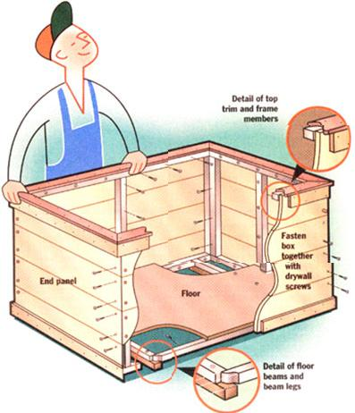

DO IT YOURSELF
Since you can't buy a decent woodbox, make one yourself.
You just can't buy a decent woodbox. Oh, furniture stores sell wood-trugs to match the shiny brass tong-and-shovel sets that frame suburban, recreational fireplaces. And you see tinny, bent-tube wood cribs offered in "country living" mailorder catalogs now and again. These are decidedly meagre log accomodations and only ensure that you will run out of fuel when you least want to. A serious wood burner needs a serious wood box-one large enough to hold several stove-loads of logs and strong enough to withstand arm-fulls of wood being dumped into it.
With heavy, rough-barked, cordwood logs going in and out of it every day, a wood box leads a hard life. If built of fine, furniture wood, sanded smooth, and given a glassy finish, it would dent and scratch and look ratty in no time. Better to use rough wood and leave it unfinished for a rugged look that will improve with mistreatment. Check the Yellow Pages (of outlying rural areas if you still live in town) under Lumber for rough-cut sawmills that sell unplaned boards. If your living room decor would turn its nose up at a wood box made of hairy, saw-scarred oak or hemlock planks, use weathered bamboards, pecky cypress siding, white cedar fence boards, or redwood decking. Save money by looking in building-supply recycling outlets for reclaimed barnboard, old decking, and other experienced wood.
To make, you will need a circular saw with rough-cut and planing blades, an electric power driver, and a small supply of 2" and 1 5/8” #6 drywall screws, plus a 1/8” twist drill bit to make pilot holes. You'll need right angles and a 4' straightedge with a pair of clamps to hold it down on a good-size, flat, work surface. This box is built by screwing together four pre-assembled, frame/planking panels. A roll of duct tape and a $5 hot-resin glue gun will help hold parts together for permanent fastening. For the most elegant job, a countersinking bit for #6 screws, a #6 plug-cutter, and woodworkers' glue will let you hide visible screw-heads. For attaching trim, you'll need finishing nails and woodworkers' glue; to finish them, you'll need an edge-rounding tool or sandpaper and a sanding block.
Lumber needed depends on the size of your woodbox, which in turn depends on the length of cordwood your stove uses, wall space available for the woodbox, and the proportions which best fit your room. Our stove takes 16" wood, and I built my box so the inside would measure roughly 20" in both interior width and depth to give plenty of leeway so that logs wouldn't jam going in or out. We have about a yard of wall space, so I made the box a bit short of 36" wide. Walking in with arms filled with logs, I can just roll the wood off and into the side of the box, or stack side by side if loading from the front.
The list of instructions and materials that follow will let you build a box of almost any size up to 3' wide and 2' in depth; height using common outdoor building-lumber. I used inch-thick, 5½"-wide white cedar left over from building a boat dock for the siding. For framing, I used inch-and-a-half square, native-white oak salvaged from shipping pallets. For edge trim and to plug screw holes, I cut 3/4"-thick, red cedar boards into 2½" strips. Tung oiled, the reddish trim contrasts nicely with the creamy-white siding and the wood gives off an exotic aroma that refreshes itself each time a log bounces off the wood.
To build a 2 x 2 x 3-foot or smaller box with minimal waste, buy four 10'-long boards of any tough wood that is a true 5½" wide and inch thick (according to confusing lumberyard tradition, sold with a nominal thickness of 5/4" and width of 6" and designated as a 5/4 x 6 x 10.) Or you can use three 5/4 x 8 x 10s. Do not buy common "one-inch" wood-soft pine shelving that is actually a too-thin 3/4" through dents easily. For the bottom, I cut a 2 x 3 panel from a sheet of ½" plywood I had on hand. Lacking plywood, it's cheaper and easier to buy another 10' length of 5/4" lumber. For framing, get 30 running feet (four 8'-lengths or three 10-footers) of 1½ square hard pine or an inexpensive hardwood such as birch. (As a last resort, you can ripsaw a 2 x 4 into square stock). For a more finished look, buy 24 running feet of nominal 1 x 3 wood (if you can't find a 1 x 3, split a 1 x 6 in half) to trim the edges, plus 12' of 1 x 4 wood to trim the top. The harder the trim wood, the better.
Rough-cut both 1 x 6 x l0s and two of the square-framing boards into two 3' and two 2' lengths. Cut the remaining square-frame board into 2' lengths. It makes for quickest and most accurate finish cuts if you equip your work bench with a stop-block-a straight, 4 2 x 4 to be clamped or drywall-screwed to the work surface, so you can push the backsides of boards against it and cut them all to the same length. Also, get out your 4'-metal straightedge and a pair of clamps in order to hold it down to act as a circular, saw-cutting guide.
Place the stop block just a couple of inches short of 3' back from-and parallel to-the front edge of your work surface. Set one cut end of your 3'-siding boards against the stop block. With a right angle, assure that the boards are perpendicular to the stop block. Clamped at the front end of the boards, the steel straight-edge will serve both to hold the boards in place and act as a guide for your saw. Place the steel on top of the boards and-with the baseplate of your circular saw-nudge it just far enough back from the board ends so that the saw blade will take off a good bite of wood. Clamp the steel atop the boards parallel to the edge of your work table and at a precise 90° "L" angle to the boards' long edge.
You can cut siding boards at a straight up-and-down 90° and make crude butt-joints. It isn't much harder to cut them at 45° so they meet in a more finished, knife-edge mitered joint. Put the planing blade on your circular saw and set the cutting angle to 45°.
At this, its most extreme cutting angle, a circular saw is off balance and tends to wobble in the kerf (kerf is wood-butcher's talk for a saw cut). Plus, you are sawing at an awkward angle through almost 2" of wood. Have the work to your left so the blade angles off to your left and most of the saw's baseplate will rest on a firm surface. Hold the tool firmly with both hands, keep the edge of the baseplate snug against the straight-edge/saw guide, and move it forward, slowly and carefully. When ends of all the 3' siding boards have been trimmed to 45°, move the stop block and straightedge forward and trim one end of all 2' siding boards.
Measuring on the tops of the boards you just cut-from the outer (sharp) edge of the 45° end-mark the other end of the 2' boards so they will come out the outside depth you want your box to be (in my case, 23"). Reset and clamp your stop blocks and straight edge; slide the 2' boards forward, and cut them to length with the saw set at 45°. Then mark the three-footers to the box's precise outside width, reset blocks again, and cut those boards to length.
John Vivian fastens redwood trim to the woodbox prior to
attaching the feet and taking it inside for final fastening.
Set two long and two short siding boards up on their long edges and trial-assemble them into the rectangular shape of the woodbox. Use a right angle to make corners square. Tap joints to align the edges knife-sharp. Tape the boards together if need be. Carefully measure the inside of the long boards and trim the four, 3'-long, square-stock frame boards to this length. You could angle-cut the frame boards, but they won't show and it is easier just to cut the ends square.
Set two of these newly-cut, frame members snug against the bottoms of the long siding-boards inside the trial-assembly, and measure the distance between their ends. Trim the four short frame-boards to this length and check accuracy by setting two of them in place along the bottoms of the short siding-boards inside the trial assembly. All frame boards should butt together snugly, but not so tight they open the joints between siding boards.
Now, make another trial assembly of two more long and two short siding and frame boards. Use the hot-glue gun to tack frame to siding boards. Lay boards flat, drill pilot holes through frame boards and into siding, two inches from ends and at approximate 6" intervals between, and fasten with drywall screws.
Begin by assembling the two 3'-long side panels and two 2'-long end panels. For each, lay two unframed siding boards between a pair of already-framed siding boards oriented so that there is a frame board at the top and bottom of the four-board panel. Use your framing square to arrange the boards into a perfect rectangle. Then measure, cut, and tack-glue a pair of vertical frame members between and perpendicular to the horizontal frame pieces already attached to the top and bottom boards-one at the center and one at the right edge of each panel. Be sure the outer edge of the frame board placed at the right margin of the panel is even with the inner edge of the 45° saw-cuts in the boards. Pilot-drill and screw-fasten frame to siding as before.
Now you have four panels fastened with interior framing-horizontals at top and bottom; vertical frame boards at center and the right edge. Set the four panels on edge and arrange them in their finished rectangular configuration. Tape together for now. Next, make a bottom. If you have a piece of plywood, measure (tracing a paper pattern is the surest way), cut, and set it in atop the bottom frame members. Otherwise, measure, and cut extra siding or any scrap, inch-thick lumber you may have. Set it in to hold the box square, but don't fasten yet. Square corners around the bottom and tape or hot-glue-tack corners one at a time in a perfect 90° with a tight knife-edge at all four corners.
Assemble the four sides into a box and fasten adjoining frame members together from the inside with drywall screws. (Remove frame boards and refasten if corners don't make a sharp, closed edge.) Final-fasten panels by pilot-drilling and inserting screws through unframed ends of siding boards and into frame members behind them-already fastened to the ends of the adjoining panel. For a more finished appearance, use a #6 counter-sink to remove a ¼" deep plug of wood in alternating corners where screws go in through the outside. Drill fake screw holes in the outside edges of corners already fastened to frame boards from the inside. From a separate piece of wood (in a contrasting shade if available), cut plugs with a #6 plug-cutter, cover with woodworkers' glue, and insert on top of the countersunk screw heads. After the glue dries, use a chisel to shear plugs off at board-surface level.
Finally, spread woodworkers' glue around the tops of the bottom frame boards, set bottom board(s) in atop them, and pilot drill and fasten with drywall screws, every four inches or so.
This box sits-or as the style-minded might opine, squats -flat on the floor. For a less stolid appearance, give it a lift with a set of beam legs that is a little shorter than the box is wide to give a nice shadow line. Cut two lengths of 2 x 2 or scrap 1½"-square framing an inch shorter than the box is wide. Turn the box over and tack them to the bottom frames across the narrow dimension of the box and about 6" in from each end. Fill the space between the beams and the flooring above with scrap wood spacers. Screw leg beams to the spacer above them with three evenly-spaced drywall screws. Turn the box over again and fasten the flooring to the spacer below. Pilot-drill the holes in the thin leg-wood.
Not structurally necessary but a nice finishing touch, are lengths of nominal 1 x 3 (actual measure: ¾" x 2½") trim to finish the top and bottom edges of the panels and 1 x 4 to trim the top. To trim edges, rough-cut the stock into four 3', 1" (side) and four 2' 1" (end) trim boards, cutting one end of each board with the saw set for a 45° miter. Then measure from the sharp edge of the angled cut and mark the boards equal to the length of the ends/sides of the box plus twice the thickness of the trim wood itself. Check measurements on the box. Set stop block and straight edge as before, and miter cut the four trim-boards to length. Spread woodworkers' glue on the insides of the trim boards and fasten them even with margins of the box with finishing nails every four inches.
Four-inch cap trim laid flat on the top will hide the frame and finish off the box nicely. You want to cut the joints between short and long trim boards at a 45° flat angle, but measuring on a finished piece can be complicated. Better to cut templates from cardboard, fit and trim them by trial-and-error on the box itself; then transfer the pattern to the wood. Measure precisely; saw straight and at a perfect 45° angle. Top trim is liable to being dislodged by incoming or outgoing logs. Have the inner edge of the trim just even with the inner edge of the frame piece below it to keep logs from snagging as they come out. Attach with woodworkers' glue and finishing nails every 3" in dual rows set into both siding and frame boards.
I had to sand some lumberyard marks. Then I Tung oiled the box and let it take on a rough patina. You may feel that your new box looks raw and want to stain it-don't use a hard finish. Even super-durable, polyurethane floor-enamel is bound to chip in time. You might give the wood a light coat of the exterior house stain that best matches your interior trim and furnishings. A furniture stain followed by Tung oil or oil alone will give a more elegant finish that can be renewed. Whatever finish you decide upon, try it on scrap wood before applying it to the box itself.
Some new-to-the-country folks cut a few cords of stove wood on their back 40, then split and piled some in their cellar and some in the woodbox. Within a few days, most of the wallpaper on the first floor peeled off! What's the moral of this yarn?
Trees fall into two categories: deciduous trees, generally called hardwoods, and evergreens, usually called softwoods. But not all hardwoods are hard, and not all softwoods are soft. If you can, burn "hard" hardwoods such as maple, birch, and oak-dense, slow-growing trees that produce fuel containing concentrated energy and that produce the least creosote. "Soft" hardwoods, such as aspen and cottonwood, are less dense and burn faster. Evergreens-hard or soft-such as pine, hemlock, or spruce, burn beautifully but are less dense than hardwoods, so burn faster; worse, the resins they contain will volatilize in a "cold" fire and produce creosote. If you must use softwoods, make small, hot fires (and never load up a pre-EPA model airtight stove with softwoods for risk of a chimney fire).
So what caused the wallpaper of these nice folk's home to come off? Living trees contain up to 50 percent water. Placing them in your house without preparing them first is just inviting all that moisture into your den. If logs are left in the woods for six months or so, the wood will dry to the same moisture content as the air-about 25 percent. (That's "seasoned" wood-discernable from "green" wood by its dry and cracked ends.) It burns, but a quarter of its energy is still lost in evaporating water. Better to cut or buy wood a year before use. After the first six months in the woods, it should be split (the better to evaporate even more water) and stacked loosely in the sun under a black plastic tarp.
A cord is defined as 128 cubic feet-no longer than a 4x4x8-foot stack-of wood. Most states require sellers to provide an honest cord of seasoned wood and; still others regulate price as well (about $100 per cord). Green wood should cost 25 percent less. Beware of buying non-regulated "face cords," "ricks," or "bundles."
|
 ILLUSTRATIONS BY SCOTT MACNEILL |
|
|